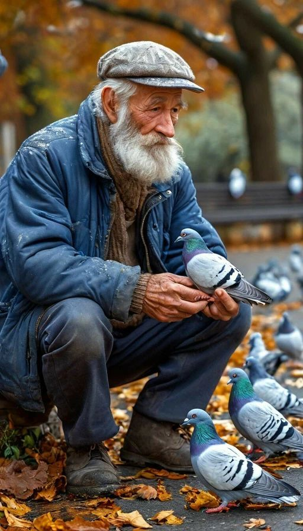

Sketches
Dessins des premières fonctionnalités : personnalisation et planification de l'entraide.
Seren'Age est né d'une conviction simple : un sourire ou un service partagé peut changer une vie. Découvrez comment nous recréons du lien, un voisin à la fois.
ExplorerDerrière chaque chiffre, il y a un visage, une histoire, et souvent, un silence trop long
de la population française a plus de 65 ans.
de seniors souffrent d'isolement social au quotidien.
des français déclarent avoir aidé régulièrement une personne âgée
Aujourd'hui, des milliers de nos aînés passent des journées entières sans entendre une voix familière. Ce n'est pas seulement de la solitude, c'est une partie de notre société qui s'efface. Nous croyons que la solution n'est pas technologique, mais humaine.
Au début, nous cherchions une idée. Puis, nous avons écouté. Nous avons compris que l'argent n'était pas le moteur, mais l'envie d'être utile. En fusionnant le plaisir et l'entraide, Seren'Age est devenu une évidence : un pont entre ceux qui ont besoin d'un coup de main et ceux qui ont du temps à offrir.
Dessins des premières fonctionnalités : personnalisation et planification de l'entraide.

Mise à plat de l'ergonomie en noir et blanc pour valider le parcours utilisateur.

Interface finale après retours utilisateurs : plus de contrastes et boutons agrandis.

🎂 75 ans
📍 Paris
🔧 Expertise : Mécanique
Je préfère les activités locales. Adepte de la régularité et des rendez-vous fixes. Très ponctuel.
Famille • Anciens collègues • Proximité géographique
Je souhaite maintenir un lien social, rester actif physiquement et se sentir utile à la communauté.
J'ai besoin de contacts humains directs et d'interfaces numériques ultra-simplifiées.
J'ai des difficulté avec la technologie complexe et j'ai peur de ne pas être au niveau physiquement.
"Je ne cherche pas la lune, juste quelqu'un avec qui partager un café en rentrant du marché."
Concept pertinent, dimension solidaire, ton chaleureux
Textes plus grands, filtres clairs, alternatives au vocal
Nous ne voulons pas seulement créer une application. Nous voulons que chaque quartier devienne une famille. Un monde où l'âge n'est plus une barrière, mais une richesse partagée.